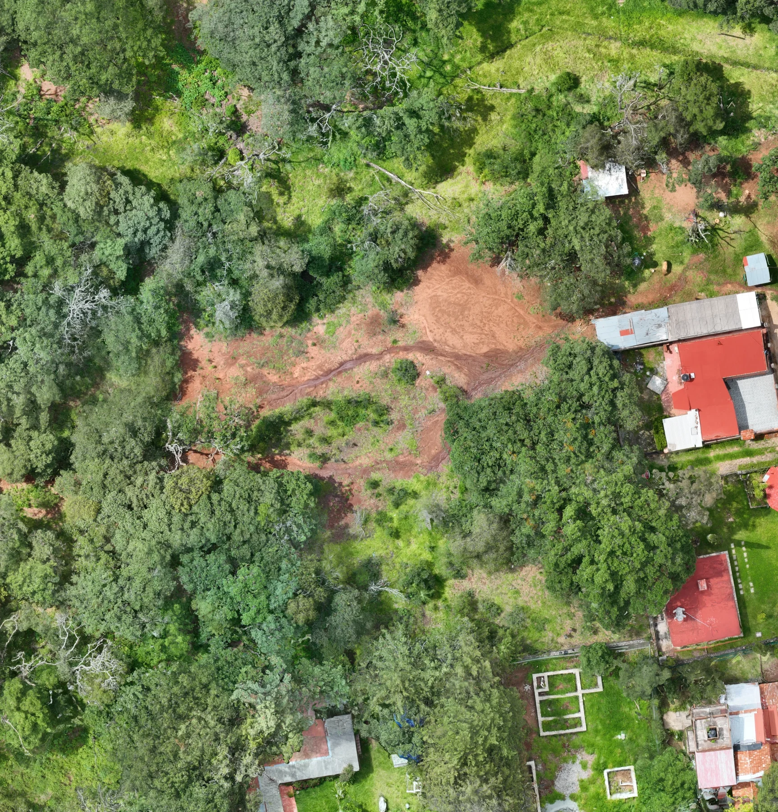
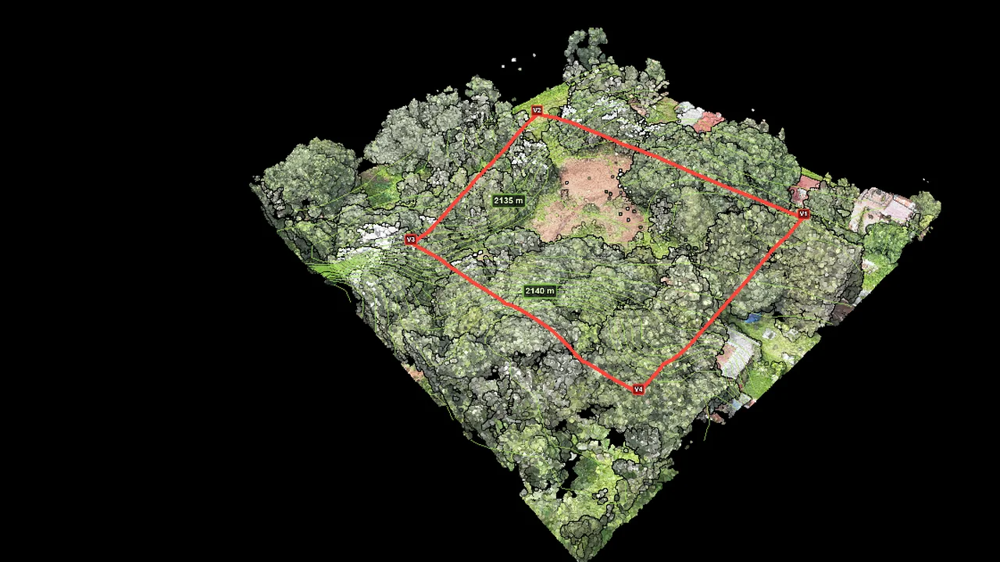

Portal de proyecto · Huasca
Max, tu proyecto de Huasca en un solo lugar
Consulta el modelo tridimensional, compara las capas procesadas y accede a los entregables disponibles desde cualquier dispositivo.
- Superficie en plano
- 4,015.88 m²
- Puntos procesados
- 25,131,914
- Curvas de nivel
- 0.50 m
- Resolución del ortomosaico
- 1.76 cm/px
Tu expediente visual
Del vuelo a una lectura clara del terreno
Cada vista responde una pregunta distinta: el ortomosaico muestra el contexto real, la elevación revela el relieve, el MDE ayuda a leer la superficie y el mapa ordena la ubicación general.
Alcance: este portal organiza el expediente y facilita su consulta. El visor 3D es una herramienta visual; los documentos descargables conservan sus propios alcances y notas técnicas.
Lectura por capas
Un terreno, distintas formas de entenderlo
El comparador es una vista 2D: arrastra el tirador sobre la imagen. Usa las pestañas para revisar cada capa por separado.

Elevación RGBNo fue posible cargar esta vista. Intenta actualizar la página o abre el visor 3D.
Experiencia tridimensional
Recorre la nube de puntos
Este es el único visor 3D de la página. Se carga automáticamente al acercarte a esta sección y conserva todas las herramientas del proyecto.
Preparando nube interactiva…
Centro de entregables
Tus archivos, ordenados por disponibilidad
Consulta documentos entregados, recursos disponibles y elementos que requieren solicitud o validación previa.
Cargando el expediente…
No hay archivos en este filtro
Prueba con otro estado o solicita ayuda al equipo.
No pudimos abrir el índice de archivos
Actualiza la página. Si el problema continúa, escríbenos por WhatsApp y te compartimos el archivo que necesites.
Solicitar apoyoDocumento técnico
Explora el juego de planos
Seis páginas organizadas como una mesa de revisión. Selecciona una hoja para verla con mayor detalle.
Las previsualizaciones facilitan la consulta; el PDF del centro de entregables conserva el documento completo.
Cargando páginas…
Bitácora visual
Una síntesis para volver al proyecto
Revisa el vuelo y los productos principales en una pieza breve. El video no se reproduce automáticamente.
Historial del expediente
Qué se ha incorporado al portal
Una lectura por fases, sin convertir el portal en una bitácora técnica difícil de consultar.
-
01
Completado
Captura aérea
Vuelo y registro fotogramétrico incorporados al procesamiento.
-
02
Completado
Procesamiento visual
Ortomosaico, nube de puntos, elevación y MDE preparados para consulta.
-
03
Disponible
Portal del proyecto
Visor 3D, vistas comparativas y centro de archivos reunidos en un solo enlace.
-
04
Por solicitud
Archivos técnicos de gran tamaño
La nube, el ortomosaico y el modelo texturizado se preparan bajo solicitud según el formato de trabajo.
Acompañamiento directo
¿Buscas un archivo o necesitas que revisemos una vista contigo?
Escríbenos indicando el nombre del entregable. Te ayudamos a ubicarlo y aclaramos el alcance técnico antes de que lo uses.